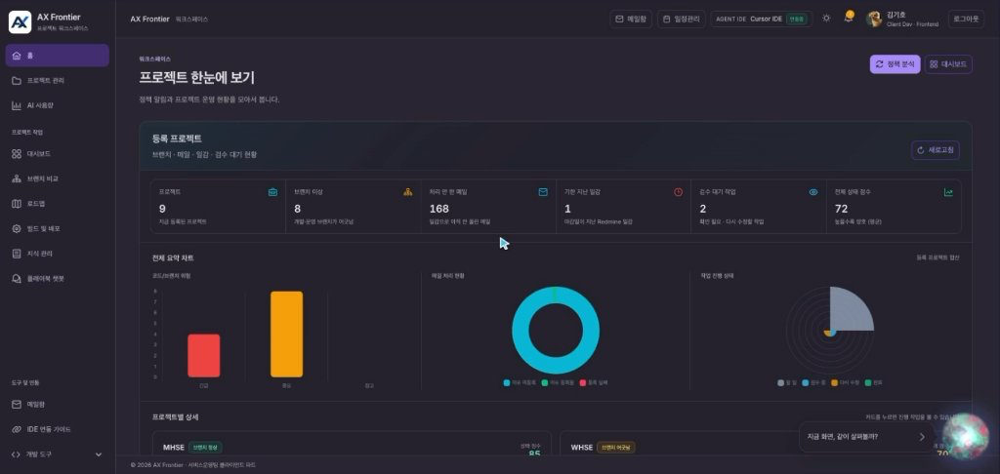

AX Frontier · 엔터프라이즈 AI 연동 플랫폼
비정형 요구사항(이메일, Redmine) 수집부터 IDE 에이전트(Cursor MCP) 실시간 맥락 주입, 불변 기준선(Baseline ID) 거버넌스 및 Playwright 브라우저 자동 재검증 파이프라인까지 아우르는 사내 표준 AI 플랫폼입니다.

브랜치 이상(8건), 비정형 인입 메일(168건), Cursor IDE 실시간 연동 현황, 위험 요약 차트 및 AI 챗봇을 통합 관제하는 실서버 워크스페이스입니다.
불변 기준선(Baseline ID)을 중심으로 비정형 요구사항과 IDE 에이전트 코드 변경, 브라우저 자동 재검증 상태를 실시간 결합합니다.
업무 도구를 하나의 흐름으로 통합
메일 서버와 Redmine 일감을 자동 수집하여 일감 맥락(Context)을 파싱하고, 분산 세션 기반 API를 통해 웹 화면과 AI 서비스에 실시간 제공합니다.
Cursor MCP & Hooks 에이전트 연동
개발자가 IDE(Cursor)에서 일감을 선택하면 MCP 서버를 통해 요구사항이 프롬프트에 자동 주입되며, 개발 완료 시 Hooks를 통해 결과 산출물을 플랫폼에 자동 제출합니다.
설계-구현 1:1 무결성 (Baseline ID)
단순 문서 저장을 넘어 불변의 Baseline ID를 발급합니다. 설계가 변경되면 기존 승인을 즉시 무효화하고 테스트 통과를 강제하는 엄격한 거버넌스를 구현했습니다.
Playwright 자동 검증 & CI 배포 결합
설계 버전과 Playwright 브라우저 E2E 테스트 결과를 1:1로 결합하여 무결성을 자동 증명하며, 통과 시 GitLab CI를 통해 변경 리소스를 증분 ZIP 패키징합니다.